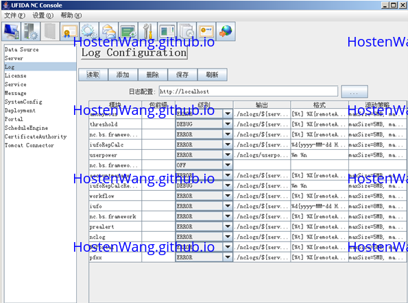

用友NC开发 - 日志配置|Yonyou Nc Development - Log Configuration
概述|Overview
本文记录如何在 用友(yonyou) NC 使用日志
日志机制提供对系统运行时的监控及支持对系统异常的追踪与定位。日志机制可控制日志输出的格式、日志信息的级别、日志信息输出的目的地（文件、控制台、SocketServer等）。通过配置文件进行灵活的设置，用户可以细致地控制日志的生成过程，而不需修改程序代码
环境|Environment
| 名称 | 版本 | 备注 |
|---|---|---|
| Windows | 10 home x64 | |
| jdk8 | 131以上 | |
| U8Cloud | 3.1 | |
| eclipse_u8c |
步骤
查看日志配置
- 打开 NC 安装目录下的
sysConfig.sh进行日志配置 - 点击"读取"按钮.选择路径
{{NCHOME}}/ierp/bin/logger-config.properties文件，点击【读取】按钮, 会看到很多日志信息

添加自定义日志
添加自定义日志
添加
点击【添加】按钮,新增的行，填写如下信息:
模块：test
包前缀：为空
级别：DEBUG
输出：./nclogs/${server}/test-log.log
格式：%X{serial} [%t] %X{remoteAddr} %X{user} %d{yyyy-MM-dd HH:mm:ss} [%A] %p %m %n
保存后重启NC服务
重启NC服务
使用
// 在输出日志前添加
nc.bs.logging.Logger.init("test");
Logger.debug("https://hostenwang.github.io/");
日志级别的选择
目前规定日志只有四种日志级别DEBUG、INFO、 WARN、 ERROR,顺序为DEBUG<INFO<WARN<ERROR,如果日志级别调的较高，低级别的日志就不能输出如，设置位WARN，那么DEBUG与INFO的信息就不能输出。
对四个级别的信息输出：
- DEBUG: 输出普通的调试信息，主要用于开发环境的信息输出
- INFO: 输出提示性的信息，如程序运行所花费的时间等
- WARN: 输出警告性的信息，如系统设置了一个需要打开的文件，但是系统在打开他的时候有问题，而用了一个缺省的文件，为此系统还是能够正常运行，但却不符合某些期望，采用警告
- ERROR: 错误信息输出，表示系统出了错误，影响了系统的功能，如系统抛出了一个NullPointException,系统不能正常运行。统运行时默认输出级别为ERROR
未来展望|Further
- NC 包含的功能还是比较齐全的
-